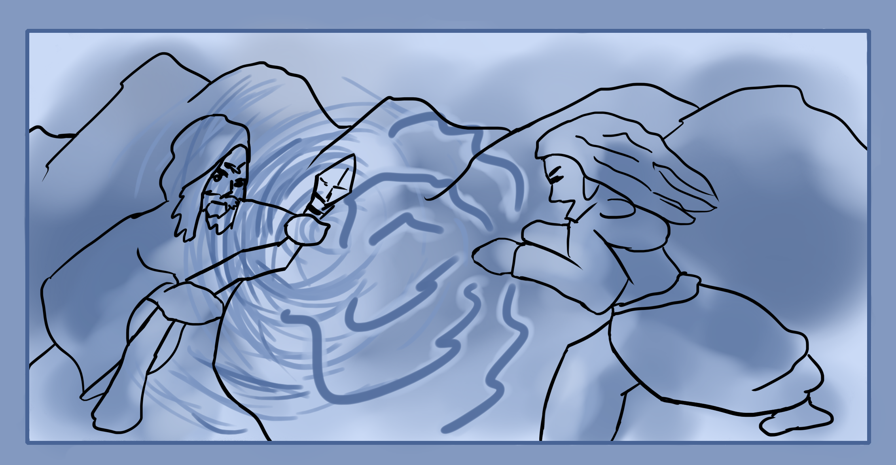

Thus far you've practiced internal and external magic. After that the magic has been activated and linked to a talisman. You may notice that you don't need to use a talisman to perform the same magic. Similarly, you can instead use a voice command, linking the magical spell to that of a set of words. So essentially you create a spell internally and "can" use an external tool like talisman paper or words but don't need to if you don't want to. Each of them has their own pros and cons.
There is also the matter of desire magic. This type of magic simply uses an intention which is highly energized. So does this kind of simple magic work for other things? Yes and no. So far you have used elemental magic which can create a real, tangible and even measurable effect on the atmosphere like that of temperature or a significant feeling of weight and lightness. Can this be done purely through a highly charged intent instead of careful manipulation of imagination? Yes it can. This is called sorcery. The use of will, intent, emotion, force and words to create a magical effect.
A wizard is more of someone who carefully plans and works out a spell beforehand. They have great knowledge and wisdom of reality as well. While sorcerers usually have immense inherent magical strength and a lot of luck.
It's good to learn both methods of crafting actual spell and writing them down as well as forming the ghost image of them as well as being able to cause effects and change through pure will.
Types of Casting
The two main types are continuous casting where you continuously keep the spell up and funnel energy into it, while the other is burst casting or single cast spells. Burst casting is where you have a strong idea or a pre-made spell and you charge up energy to use it with. Essentially a single second burst of power that is funneled through whatever spell design or map you have. This is more used with word triggers but can be done silently.
Spell Time
Spells only last as long as the mana used to create them. You can extend them by intending and using energy to keep them running longer. The stronger a spell the more energy it requires to upkeep. So usually you may want to recast certain spells like barrier ones every day. As you improve you can also feel out when the spell has lost its energy and dissipated.